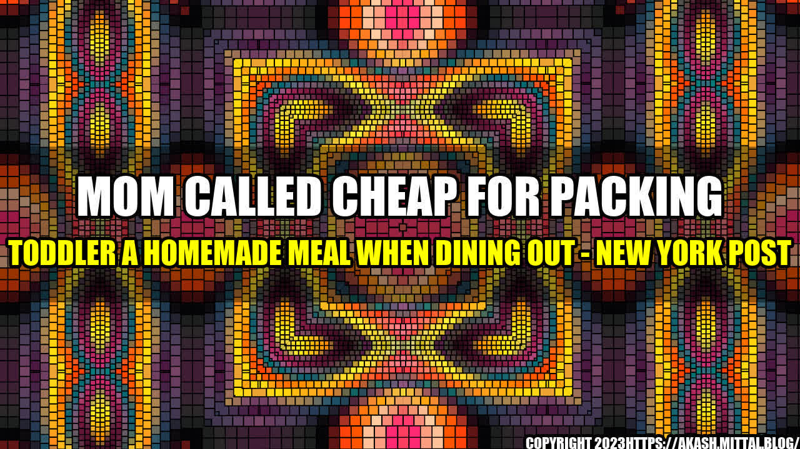

The Controversy Around Packing a Homemade Meal for Your Toddler When Dining Out

As a mother of a two-year-old boy, Samantha was always looking for ways to provide healthy and wholesome meals for her son. However, when she packed a homemade meal for him during a family outing to a fancy restaurant, she never expected the backlash she received from other diners.
One woman at a nearby table scoffed and called Samantha "cheap" for not ordering a meal for her son from the restaurant. This incident sparked a wave of controversy online, with many parents sharing their own experiences of packing a homemade meal for their children when dining out.
The Benefits of Packing a Homemade Meal for Your Toddler
While some may see it as "cheap" or disrespectful to restaurants, there are actually many advantages to packing a meal for your child when dining out.
- Healthier Options: Many restaurants may not offer healthy meal options for young children, leaving parents with limited choices. By packing a homemade meal, parents can ensure their child is getting the nutrition they need.
- Cost Effective: Dining out with a toddler can be expensive, especially if you have to order a separate meal for them. Packing a homemade meal is a cost-effective option that can save parents money in the long run.
- Allergies and Preferences: Parents of children with allergies or specific dietary preferences may struggle to find suitable options on the menu. Packing a homemade meal can alleviate this issue and provide peace of mind for parents.
Practical Tips for Packing a Homemade Meal
While packing a homemade meal for your child may seem daunting, there are simple ways to make the process easier and more efficient.
- Plan Ahead: Pack the meal the night before or in the morning to save time and avoid last-minute stress.
- Use Travel-Friendly Containers: Invest in containers that are leak-proof and easy to transport, such as bento boxes or reusable ziplock bags.
- Bring Extra Snacks: Along with the main meal, pack additional snacks such as fruit, crackers, or veggie sticks to keep your child full and satisfied.
Conclusion
Packing a homemade meal for your toddler when dining out may not be the norm, but it can be a practical and healthy option for many families. By planning ahead and packing nutritious meals, parents can save money and ensure their child is getting the nutrition they need while enjoying a family outing.
- Packing a homemade meal for your toddler can be a healthy and cost-effective option when dining out.
- Plan ahead and use travel-friendly containers to make the process easier.
- Parents should not feel ashamed or judged for packing a meal for their child when dining out.
References:
Hashtags: #homemademeals #toddlers #diningout #healthyoptions #costeffective
SEO Keywords: homemade meals, toddlers, dining out, healthy options, cost-effective
Category: Parenting
Curated by Team Akash.Mittal.Blog
Share on Twitter Share on LinkedIn